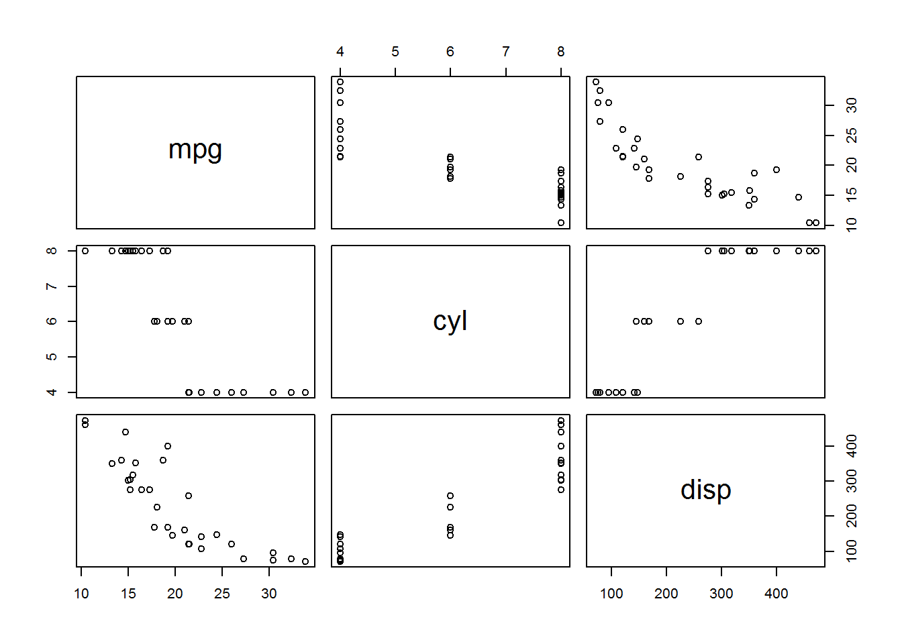

knitrContainer
knitrContainer
knitrContainer is an R package designed to collect objects and print them in knitr reports.
From Git Hub repository:
library(devtools)
install_github("GegznaV/knitrContainer")knitrContainer?Only 4 things should be done for basic use of knitrContainer package :
knitrContainer());add_as_* family functions, e.g. function add_as_is());knitr report file set option results to results='asis';print_all() in the chunk which has option results='asis'.library(knitrContainer)container <- knitrContainer()
container <- add_as_text(container, "Text to be added.")
print_all(container)Example how to add objects using the operator %<>% from package magrittr:
container %<>% add_as_text("Text added using `%<>%` operator.")It is the same as:
container <- add_as_text(container, "Text added using `<-` operator.")Type the following code in R to learn more about operator %<>%:
`?`(`%<>%`)More detailed examples are presented in the following sections.
knitrContainer
library(knitrContainer)
library(ggplot2)
library(plotly)… and create necessary objects
plotly_obj <- plot_ly(CO2, x = ~conc, y = ~uptake, type = "box", showlegend = FALSE)
ggplot_obj <- qplot(mpg, wt, data = mtcars, colour = cyl)knitrContainer objectcontainer <- knitrContainer()
class(container)
#> [1] "knitrContainer" "list"
container
#> *** Empty container ***# Section headings
container <- add_as_heading1(container, "Plots")
# Add `plotly` objects as `htmlwidgets`
container <- add_as_heading2(container, "Add `plotly` as `plotly htmlwidget`")
container <- add_as_plotly_widget(container, plotly_obj)
#> Warning: 'plotly::as.widget' is deprecated.
#> Use 'as_widget' instead.
#> See help("Deprecated")
# Add `ggplot` objects as plotly `htmlwidgets`
container <- add_as_heading2(container, "Add `ggplot` as `plotly htmlwidget`")
container <- add_as_plotly_widget(container, ggplot_obj)
#> Warning: 'plotly::as.widget' is deprecated.
#> Use 'as_widget' instead.
#> See help("Deprecated")
# Add `ggplot` objects as `ggplot` objects
container <- add_as_heading2(container, "Add `ggplot` as-is")
container <- add_as_is(container, ggplot_obj)
# If `plotly` objects are aded as-is, they might not be plotted
container <- add_as_heading1(container, "Attention: Not Plotted")
container <- add_as_is(container, plotly_obj)
container <- add_as_text(container, paste("As you noticed, the last", "`plotly` object was not plotted as it was added with ",
"`add_as_is()` and not with `add_as_plotly_widget()`"))
# --- Calculations ---
SUMMARY <- summary(mtcars[1:4])
# --- Add `pander` tables ---
container <- add_as_heading1(container, "Print SUMMARY as pander table and as text")
# Add objects, printed as `pander` tables
container <- add_as_heading2(container, "As pander table")
container <- add_as_pander(container, SUMMARY)
# Add as R output text
container <- add_as_heading2(container, "As Code/ Output Text")
container <- add_as_text(container, "Not highlighted")
container <- add_as_code(container, SUMMARY)
container <- add_as_text(container, "Highlighted as R code")
container <- add_as_code_r(container, SUMMARY)
container <- add_as_text(container, "Output with default `knitr` comments")
container <- add_as_output(container, SUMMARY)
container <- add_as_text(container, "Output with custom comments")
container <- add_as_output(container, SUMMARY, comment = "#$#>")
# Add as text = Add as one paragraph
container <- add_as_heading2(container, "As text/paragraph")
container <- add_as_text(container, SUMMARY)
# Add as-is
container <- add_as_heading2(container, "As is")
container <- add_as_is(container, SUMMARY)Note, that functions summary(container) and print(container) do the same action: print summary of the object
print(container)
#> ================================================================================
#> *** knitr container ***
#>
#> Contains 26 object(s):
#>
#> Added.as Preview Size Classes
#> 1 Heading # Plots 0.5 Kb character
#> 2 Heading ## Add `plotly` as `pl... 0.5 Kb character
#> 3 Plotly widget 22.4 Kb plotly, htmlwidget
#> 4 Heading ## Add `ggplot` as `pl... 0.5 Kb character
#> 5 Plotly widget 11.2 Kb gg, ggplot
#> 6 Heading ## Add `ggplot` as-is 0.5 Kb character
#> 7 As is 11.2 Kb gg, ggplot
#> 8 Heading # Attention: Not Plotted 0.5 Kb character
#> 9 As is 22.4 Kb plotly, htmlwidget
#> 10 Text As you noticed, the la... 0.4 Kb character
#> 11 Heading # Print SUMMARY as pan... 0.5 Kb character
#> 12 Heading ## As pander table 0.5 Kb character
#> 13 Pander object 1.3 Kb character
#> 14 Heading ## As Code/ Output Text 0.5 Kb character
#> 15 Text Not highlighted 0.3 Kb character
#> 16 Code ``` mpg ... 1.6 Kb character
#> 17 Text Highlighted as R code 0.3 Kb character
#> 18 Code ```r mpg ... 1.6 Kb character
#> 19 Text Output with default `k... 0.3 Kb character
#> 20 Code ``` #> mpg ... 1.6 Kb character
#> 21 Text Output with custom com... 0.3 Kb character
#> 22 Code ``` #$#> mpg ... 1.6 Kb character
#> 23 Heading ## As text/paragraph 0.5 Kb character
#> 24 Text Min. :10.40 1st Qu... 0.7 Kb character
#> 25 Heading ## As is 0.5 Kb character
#> 26 As is 2.7 Kb table
#> ================================================================================
is.knitrContainer(container)
#> [1] TRUE
is.knitrContainer(ggplot_obj)
#> [1] FALSE
as.knitrContainer(ggplot_obj)
#> ================================================================================
#> *** knitr container ***
#>
#> Contains 1 object(s):
#>
#> Added.as Preview Size Classes
#> 1 As is 11.2 Kb gg, ggplot
#> ================================================================================
class(container)
#> [1] "knitrContainer" "list"Merge several containers.
Join(container, container) %>% length()
#> [1] 52Convert (as is) to knitrContainer and merge.
Join(container, ggplot_obj) %>% length()
#> [1] 27As function uses method “as is” to convert to knitrContainer, plotly objects might not be printed from the container in some situations (e.g. from inside for loops using knitr).
Join(ggplot_obj, plotly_obj)
#> ================================================================================
#> *** knitr container ***
#>
#> Contains 2 object(s):
#>
#> Added.as Preview Size Classes
#> 1 As is 11.2 Kb gg, ggplot
#> 2 As is 22.4 Kb plotly, htmlwidget
#> ================================================================================In these situations it is better to apply function add_as_plotly_widget first.
print_all)In section 2 there we demonstrated how to create a knitr_nontainer. In this section we will demonstrate how to print all the objects from the container.
For this purpose a special function print_all was created. As we use knitr and R MArkdown we recommend to use separate R code chunk to apply the function. It is IMPORTANT to make sure that R chunk, in which print_all() is called, has option results set to as is ({r, results = 'asis'}). Otherwise incorrect results are expected.
The following text, section headings, figures etc. (except section “ADVANCED: …” and “Session information”) are printed from the container using the following syntax:
print_all(container)As you noticed, the last plotly object was not plotted as it was added with add_as_is() and not with add_as_plotly_widget()
| mpg | cyl | disp | hp |
|---|---|---|---|
| Min. :10.40 | Min. :4.000 | Min. : 71.1 | Min. : 52.0 |
| 1st Qu.:15.43 | 1st Qu.:4.000 | 1st Qu.:120.8 | 1st Qu.: 96.5 |
| Median :19.20 | Median :6.000 | Median :196.3 | Median :123.0 |
| Mean :20.09 | Mean :6.188 | Mean :230.7 | Mean :146.7 |
| 3rd Qu.:22.80 | 3rd Qu.:8.000 | 3rd Qu.:326.0 | 3rd Qu.:180.0 |
| Max. :33.90 | Max. :8.000 | Max. :472.0 | Max. :335.0 |
Not highlighted
mpg cyl disp hp
Min. :10.40 Min. :4.000 Min. : 71.1 Min. : 52.0
1st Qu.:15.43 1st Qu.:4.000 1st Qu.:120.8 1st Qu.: 96.5
Median :19.20 Median :6.000 Median :196.3 Median :123.0
Mean :20.09 Mean :6.188 Mean :230.7 Mean :146.7
3rd Qu.:22.80 3rd Qu.:8.000 3rd Qu.:326.0 3rd Qu.:180.0
Max. :33.90 Max. :8.000 Max. :472.0 Max. :335.0 Highlighted as R code
mpg cyl disp hp
Min. :10.40 Min. :4.000 Min. : 71.1 Min. : 52.0
1st Qu.:15.43 1st Qu.:4.000 1st Qu.:120.8 1st Qu.: 96.5
Median :19.20 Median :6.000 Median :196.3 Median :123.0
Mean :20.09 Mean :6.188 Mean :230.7 Mean :146.7
3rd Qu.:22.80 3rd Qu.:8.000 3rd Qu.:326.0 3rd Qu.:180.0
Max. :33.90 Max. :8.000 Max. :472.0 Max. :335.0 Output with default knitr comments
#> mpg cyl disp hp
#> Min. :10.40 Min. :4.000 Min. : 71.1 Min. : 52.0
#> 1st Qu.:15.43 1st Qu.:4.000 1st Qu.:120.8 1st Qu.: 96.5
#> Median :19.20 Median :6.000 Median :196.3 Median :123.0
#> Mean :20.09 Mean :6.188 Mean :230.7 Mean :146.7
#> 3rd Qu.:22.80 3rd Qu.:8.000 3rd Qu.:326.0 3rd Qu.:180.0
#> Max. :33.90 Max. :8.000 Max. :472.0 Max. :335.0 Output with custom comments
#$#> mpg cyl disp hp
#$#> Min. :10.40 Min. :4.000 Min. : 71.1 Min. : 52.0
#$#> 1st Qu.:15.43 1st Qu.:4.000 1st Qu.:120.8 1st Qu.: 96.5
#$#> Median :19.20 Median :6.000 Median :196.3 Median :123.0
#$#> Mean :20.09 Mean :6.188 Mean :230.7 Mean :146.7
#$#> 3rd Qu.:22.80 3rd Qu.:8.000 3rd Qu.:326.0 3rd Qu.:180.0
#$#> Max. :33.90 Max. :8.000 Max. :472.0 Max. :335.0 Min. :10.40 1st Qu.:15.43 Median :19.20 Mean :20.09 3rd Qu.:22.80 Max. :33.90 Min. :4.000 1st Qu.:4.000 Median :6.000 Mean :6.188 3rd Qu.:8.000 Max. :8.000 Min. : 71.1 1st Qu.:120.8 Median :196.3 Mean :230.7 3rd Qu.:326.0 Max. :472.0 Min. : 52.0 1st Qu.: 96.5 Median :123.0 Mean :146.7 3rd Qu.:180.0 Max. :335.0
mpg cyl disp hp Min. :10.40 Min. :4.000 Min. : 71.1 Min. : 52.0
1st Qu.:15.43 1st Qu.:4.000 1st Qu.:120.8 1st Qu.: 96.5
Median :19.20 Median :6.000 Median :196.3 Median :123.0
Mean :20.09 Mean :6.188 Mean :230.7 Mean :146.7
3rd Qu.:22.80 3rd Qu.:8.000 3rd Qu.:326.0 3rd Qu.:180.0
Max. :33.90 Max. :8.000 Max. :472.0 Max. :335.0
add_as_data and add_as_cmd
container2 <- knitrContainer()
# Add as data and add as code to evaluate
# Add as data
container2 %<>% add_as_text("Add `mtcars` as data (it will not be printed) and rename it to 'cars_data'.")
container2 %<>% add_as_data(mtcars, give.name = "cars_data")
# Add as code to evaluate
container2 %<>% add_as_text(c("Use `add_as_cmd` to add unquoted code which manipulates the dataset ",
"'cars_data', e.g. prints its variable names or plots it."))
container2 %<>% add_as_cmd(print(names(cars_data[1:3])))
container2 %<>% add_as_cmd(plot(cars_data[1:3]))print_all(container2)Add mtcars as data (it will not be printed) and rename it to ‘cars_data’.
Use add_as_cmd to add unquoted code which manipulates the dataset ‘cars_data’, e.g. prints its variable names or plots it.
[1] “mpg” “cyl” “disp” 
devtools::session_info()
#> Session info -------------------------------------------------------------
#> setting value
#> version R version 3.4.1 (2017-06-30)
#> system x86_64, mingw32
#> ui RTerm
#> language (EN)
#> collate English_United States.1252
#> tz Europe/Helsinki
#> date 2017-07-24
#> Packages -----------------------------------------------------------------
#> package * version date
#> abind 1.4-5 2016-07-21
#> assertthat 0.2.0 2017-04-11
#> backports 1.1.0 2017-05-22
#> base * 3.4.1 2017-06-30
#> bindr 0.1 2016-11-13
#> bindrcpp 0.2 2017-06-17
#> BiocGenerics 0.22.0 2017-04-25
#> colorspace 1.3-2 2016-12-14
#> compiler 3.4.1 2017-06-30
#> crosstalk 1.0.0 2016-12-21
#> data.table 1.10.4 2017-02-01
#> datasets * 3.4.1 2017-06-30
#> devtools 1.13.2 2017-06-02
#> digest 0.6.12 2017-01-27
#> dplyr 0.7.1 2017-06-22
#> EBImage 4.18.0 2017-04-25
#> evaluate 0.10.1 2017-06-24
#> fftwtools 0.9-8 2017-03-25
#> formatR 1.5 2017-04-25
#> ggplot2 * 2.2.1.9000 2017-07-20
#> glue 1.1.1 2017-06-21
#> graphics * 3.4.1 2017-06-30
#> grDevices * 3.4.1 2017-06-30
#> grid 3.4.1 2017-06-30
#> gtable 0.2.0 2016-02-26
#> htmltools 0.3.6 2017-04-28
#> htmlwidgets 0.9 2017-07-13
#> httpuv 1.3.5 2017-07-04
#> httr 1.2.1 2016-07-03
#> jpeg 0.1-8 2014-01-23
#> jsonlite 1.5 2017-06-01
#> knitr 1.16.5 2017-07-14
#> knitrContainer * 0.0.27 2017-07-23
#> labeling 0.3 2014-08-23
#> lattice 0.20-35 2017-03-25
#> lazyeval 0.2.0 2016-06-12
#> locfit 1.5-9.1 2013-04-20
#> magrittr * 1.5 2014-11-22
#> memoise 1.1.0 2017-04-21
#> methods * 3.4.1 2017-06-30
#> mime 0.5 2016-07-07
#> munsell 0.4.3 2016-02-13
#> pander 0.6.0 2015-11-23
#> parallel 3.4.1 2017-06-30
#> pkgconfig 2.0.1 2017-03-21
#> plotly * 4.7.0.9000 2017-07-20
#> plyr 1.8.4 2016-06-08
#> png 0.1-7 2013-12-03
#> purrr 0.2.2.2 2017-05-11
#> R6 2.2.2 2017-06-17
#> Rcpp 0.12.12 2017-07-15
#> rlang 0.1.1 2017-05-18
#> rmarkdown 1.6.0.9001 2017-07-13
#> rprojroot 1.2 2017-01-16
#> scales 0.4.1.9002 2017-07-12
#> shiny 1.0.3 2017-04-26
#> stats * 3.4.1 2017-06-30
#> stringi 1.1.5 2017-04-07
#> stringr 1.2.0 2017-02-18
#> tibble 1.3.3 2017-05-28
#> tidyr 0.6.3 2017-05-15
#> tiff 0.1-5 2013-09-04
#> tools 3.4.1 2017-06-30
#> utils * 3.4.1 2017-06-30
#> viridisLite 0.2.0 2017-03-24
#> withr 1.0.2 2016-06-20
#> xtable 1.8-2 2016-02-05
#> yaml 2.1.14 2016-11-12
#> source
#> CRAN (R 3.4.0)
#> CRAN (R 3.4.0)
#> CRAN (R 3.4.0)
#> local
#> CRAN (R 3.4.0)
#> CRAN (R 3.4.0)
#> Bioconductor
#> CRAN (R 3.4.0)
#> local
#> CRAN (R 3.4.0)
#> CRAN (R 3.4.0)
#> local
#> CRAN (R 3.4.0)
#> CRAN (R 3.4.0)
#> CRAN (R 3.4.1)
#> Bioconductor
#> CRAN (R 3.4.0)
#> CRAN (R 3.4.0)
#> CRAN (R 3.4.0)
#> Github (hadley/ggplot2@331977e)
#> CRAN (R 3.4.0)
#> local
#> local
#> local
#> CRAN (R 3.4.0)
#> CRAN (R 3.4.0)
#> Github (ramnathv/htmlwidgets@6f4101d)
#> CRAN (R 3.4.1)
#> CRAN (R 3.4.0)
#> CRAN (R 3.4.0)
#> CRAN (R 3.4.0)
#> Github (yihui/knitr@546e059)
#> local
#> CRAN (R 3.4.0)
#> CRAN (R 3.4.1)
#> CRAN (R 3.4.0)
#> CRAN (R 3.4.0)
#> CRAN (R 3.4.0)
#> CRAN (R 3.4.0)
#> local
#> CRAN (R 3.4.0)
#> CRAN (R 3.4.0)
#> CRAN (R 3.4.0)
#> local
#> CRAN (R 3.4.0)
#> Github (ropensci/plotly@51a9357)
#> CRAN (R 3.4.0)
#> CRAN (R 3.4.0)
#> CRAN (R 3.4.0)
#> CRAN (R 3.4.0)
#> CRAN (R 3.4.1)
#> CRAN (R 3.4.1)
#> Github (rstudio/rmarkdown@8cfe0cb)
#> CRAN (R 3.4.0)
#> Github (hadley/scales@6db7b6f)
#> CRAN (R 3.4.0)
#> local
#> CRAN (R 3.4.0)
#> CRAN (R 3.4.0)
#> CRAN (R 3.4.0)
#> CRAN (R 3.4.1)
#> CRAN (R 3.4.0)
#> local
#> local
#> CRAN (R 3.4.0)
#> CRAN (R 3.4.0)
#> CRAN (R 3.4.0)
#> CRAN (R 3.4.0)